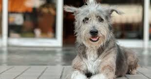

Somos un grupo de jovenes que quizimos realizar una pagina web enfocandonos en la adopción ya que alrededor la población canina en México es de 28 millones y el 70% de esta se encuentra en la calle y consideramos que alguno de estos seres tengan una vida digna tanto a perros y gatos de la calle como a aquellos en que los dueños ya no puedan criarlos o mantenerlos asi que este es el proposito de nuestra pagina y esperamos que le den apoyo.
